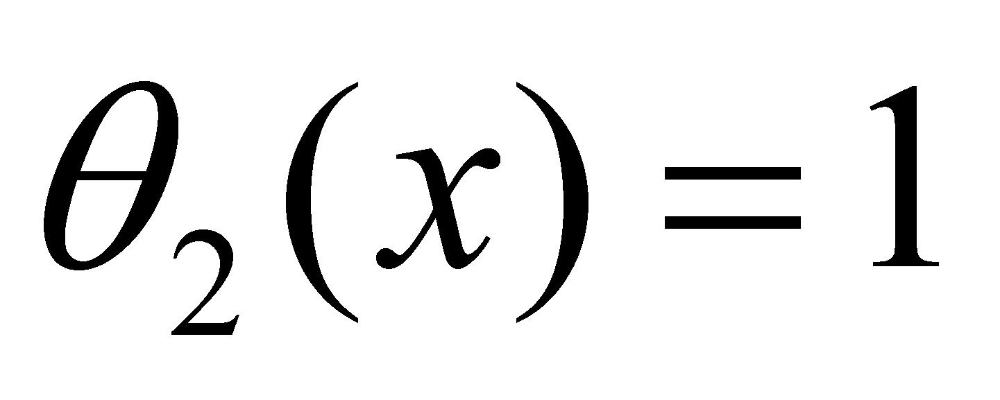
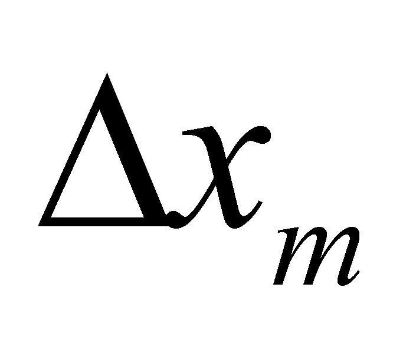
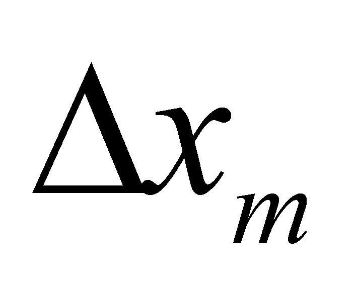
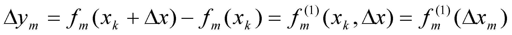
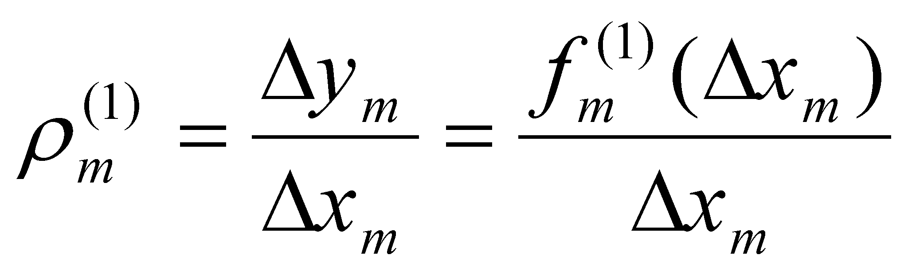

|
|
|
The notion of distribution from mathematics has been introduced as a generalization of the function concept, in order to also allow oprerations with the dependence between different variables, which could not be considered as functions, strictly algebraically speaking (for example, the discontinuous dependences). Few examples of this kind of discontinuous distributions, with a wide application field can be mentioned and these are: Dirac distribution (also known as the impulse function), Heaviside distribution (also known as the step function), etc.
For a better understanding of the distributions, it must be first understood the notion of dependence between the values of two amounts.
Comment 2.2.1: The meaning of the very general term of amount (magnitude, size) used in the mathematics field could be better understood by the reader after reading the entire paper, especially chapter 9. The only explanation which is made in advance is that an attribute (that is a property of a real or abstract object) has two components, according to the objectual philosophy: the qualitative component, represented by the name or the symbol of that property (property’s semantic value) and the quantitative component, which is also called existential attribute in the present paper, a number (scalar) which shows the measure (size, amount, degree) of existence of that property. As we are about to see next, the two components are conjunctively associated within the relationships in this paper, which means that, in case of a certain object, they can exist only together (a null value for the existential attribute implies the non-existence of an associated qualitative property). In mathematics, for providing the language universality, the associated qualitative attribute is most of the times let aside, operating in most of the cases only with existential attributes (numerical values), or with literal or graphic symbols for displaying them. Because it cannot be omitted the fact that the numerical values are however the attributes of some properties, in case of real objects, this aspect shall be mentioned anywhere necessary. Basically, this is not a mathematic paper, but the mathematic is used as an universal language for expressing the relations between various amounts.
Let us assume that there is a qualitative attribute X, which belongs to a certain object which is related to a quantitative attribute x at a certain moment, whose possible numerical values make-up an ordered set {x}. In mathematics, the quantitative value x which may belong to a property X is called amount x, and because it can take any value from {x}, it is also known as the variable x. By assuming also that there is another qualitative property Y, with the existential attribute y, whose values belong to set {y}, another amount y (or variable) is therefore made-up. If the value y is modified as a result of changing the value x and it remains invariant if x is invariant too, we may say that there is a dependence relation between the two amounts. This relation may be univocal (in a single sense) or biunivocal (interdependence). For the time being, we are only interested in the univocal dependence relation, the univocal character being presumed when we are talking about dependence. The sets of numerical values {x} and {y} which were above-mentioned, have the singular numerical values, as basic (non-decomposable) elements.
Definition 2.2.1: The invariant numerical value which is attributed at a certain moment to a variable is called the singular value of that variable (synonym - the concrete value).
Comment 2.2.2: The association of “invariant” property to a variable seems to be quite bizarre in the first place, that is why an explanation is needed. At a certain moment, when concrete numerical values are given to a variable, both the independent and the dependent variable have only a single value. It is true that the two variables can take any kind of single value from their values domain, but by means of repeated, successive assignments for each value. The variables values remain invariant between two assignments. The reader will better understand this aspect after reading the entire chapter, because the fact that a quantitative attribute (numerical value of a variable) cannot have more than one value at a certain moment, this will be considered as a consequence of the specific approach of the objectual philosophy regarding the distribution’s definition.
Definition 2.2.2: Amount y is dependent on amount x if each singular value xk from {x} determines each singular value yk from {y}, by means of a relation fk.
In other words, the amount y can be modified only by means of amount x. According to the literal mathematic syntax, one of the possible ways of writing these dependence relations is:
(2.2.1)
where is the running number of the numerical values from the ordered set {x}.
Definition 2.2.3: Two variables x and y are independent if there is no dependence relation between their singular values (the dependence relations are null for all the values from {x}).
Definition
2.2.4: The ordered set of the singular values included between
other two different singular values
and
,
which are accessible ( )
for a variable x makes-up a domain of values (synonym –
interval, range) of this variable.
)
for a variable x makes-up a domain of values (synonym –
interval, range) of this variable.
The amount, quantitative value of this interval is:
(2.2.2)
Definition 2.2.5: The singular values and , are the domain boundaries.
The domain boundaries can be part of this interval (boundaries included inside the interval), case when the interval is considered to be closed, or to not be part of this domain (to be only adjacent to the interval), case when we are dealing with an open interval (with asymptotic boundaries).
The underlining made at the definition 2.2.4 has the role to draw the reader’s attention that the condition required for the existence of a domain of values must be the existence of its two boundaries, and their values to comply with the relation 2.2.2. Expressions such as “null interval” or “void interval” are not allowed because, according to this paper, an object with a null (quantitative) existential attribute means that it does not exist.
Definition 2.2.6: If a finite interval contains an infinity of singular values, those values are called absolute accurate values (AAV).
AAV case is minutely presented in annex X.3, and for the time being we may assert that these values make-up the so-called “set of real numbers”{R}from mathematics, and each of these values comprise an infinite quantitative information amount (with an infinite of figures), therefore, they are actually virtual numbers5.
Each of the amounts implied in relation 2.2.1 can take single numerical values from a certain domain (a certain values interval) known as the domain of the independent variable, respectively, the domain of the dependent variable (sets {x} and {y} which were above mentioned). According to the most general case of dependence, each singular value xk is related to a certain relation fk and to a certain value yk, as it is shown in relation 2.2.1.
Definition 2.2.7: Set {f} of the assignment relation between each singular value of set {x} (of the independent amount) and the corresponding singular value belonging to set {y} (of the dependent amount) is the primary distribution (synonym - distribution of the singular values) of the amount y along the domain of amount x.
Definition 2.2.8: The domain of the singular values of the independent variable (set {x}) is the support of the primary distribution.
Comment 2.2.3: After the reading of the following chapter, in which the strict set shall be defined, we are about to notice that the support set of a distribution is this kind of set (which does not include identical objects, namely, identical singular numerical values). The sets {y} and {f} can be strict sets, but generally, they are not subjected to this kind of condition.
The qualitative attribute whose quantitative values make-up the set {y} is also called in this paper as distributed attribute, and the one whose values make-up the set {x} is also known as support attribute. Even if it is not necessary, we shall make once again the following assertion: the three sets {y}, {f} and {x} have the same number of elements (they are equipotent sets).
Definition 2.2.9: If the attribute y is cumulative6, the total amount of attribute y, distributed along the support domain represents the stock of the primary distribution.
In case of the virtual distributions with continuous support, this support is usually represented by an interval from the set of the real numbers {R}, and this set, as we have previously mentioned, contains an infinite number of singular values in any interval, also resulting that the number of the relations from a distribution on this kind of range should also be infinite. The question is simplified if the relation f is invariant7 along the support domain or along its subdomains (independent from the concrete, numerical values which are assigned to x). In this case, that particular relation is the classic continuous function stipulated in the mathematic analysis (where the term “continuous” means both the support continuity, but mostly the maintenance of the same dependence relations on the support range), which may be applied in the domain where this invariance is maintained. The continuous functions are therefore particular cases of distributions.
The main advantage of the continuous functions is that they replace an infinity of individual relations (for each numerical support value) with a single one, which is valid on its support domain (continuity domain). Most of the virtual distributions (mathematic) consist of several invariant relations of this kind (functions), which are defined on continuous subranges of the support domain, the gathering of this subranges making-up the overall distribution support.
Comment 2.2.4: For example, the unit Heaviside distribution with the internal reference x0 (an AAV from R) is defined as it follows:
(2.2.3)
One
may notice that two continuous functions are defined:
,
which is valid on the open support subdomain
and
,
which is valid on the semi-open support subdomain
 .
Heaviside distribution is therefore made-up from two invariant
relations (continuous functions), each of them with its own support
subdomain (it may be considered as a two-functions system).
.
Heaviside distribution is therefore made-up from two invariant
relations (continuous functions), each of them with its own support
subdomain (it may be considered as a two-functions system).
According to the most general case of primary distribution, when the assignment relations are not invariant, we are dealing with a distinct relation for each singular value of the support amount (that is the case of the distributions made as lists, tables, matrix, images, etc.).
Comment 2.2.5: A simple example for showing this kind of distribution is Dirac (x) distribution, which in case of the unit impulse may be defined as it follows:
We may notice the existence of two continuous functions, as in the case of Heaviside distribution, defined along two open intervals, but also the existence of a distinct assignment relation on a single x0 value, internal distribution reference (the concept of internal reference shall be approached in the following chapter).
Based on the issues which were presented so far, the result is that a primary distribution is decomposable up to its basic element - the individual assignment relation between a singular value of the distributed attribute (dependent) and a singular value of the support attribute (relation 2.2.1) - even in case of the continuous primary distributions (algebraic functions).
Comment 2.2.6: When the plot of a continuous, algebraic function is drawn-up on a computer, this shall use the assignment relation, by means of a repeated process, between the allotted value and the support value according to the number of the actual values (singular) which exist in the support range. The way of defining the distributions in this paper had to be consistent to SOP, which was presented within chapter 1, and due to this reason, a distribution must be considered as a system decomposable up to a basic element and composable up to the limit of the highest possible domain of the support attribute. SOP is one of the basic principles of this paper, so that, at each description of the new distributions-based objects, which are about to be presented in the following chapters, their (de)composition degree shall be minutely approached.
Therefore, the elements of a single k element of primary distribution are yk, fk and xk. The dependence between the singular distributed value and the support value shall be also written as a product:
(2.2.5.a)
or:
(2.2.5.b)
where k (in case of a distribution element) is a simple numerical value.
Definition 2.2.10: The amount given by the local assignment relation, equal with the ratio between the actual distributed value and the actual support value within a distribution element is called the density of that distribution element.
In other words, the density is an attribute specific only to the elements of a distribution, it is therefore a local amount for a certain distribution. However, if the assignment relation depends on the support value by means of a relation and this dependence is invariant on the support domain, then, we are talking about a density function of a distribution (of a primary distribution, in this case).
The assignment relations may be either simple or more complex8. We have previously seen that a distribution is simple if the assignment relation is invariant on the support domain (a continuous function). In such a case, there are once again simple or complex relations (functions); the most simple relation of this kind is a numerical constant (a numerical invariant value), evenly assigned along the entire support domain, which also gives the name of this kind of distribution, that is uniform distribution9.
This type of distribution with the most simple assignment function is a basic distribution, it can be therefore used as an element within more complex distributions. Right next to the uniform distributions, on a higher rank from the point of view of the complexity of the assignment relation, the linear distributions may be found (synonym - uniform variable), which are called in this way because they are straight lines according to the graphical plotting.
Comment 2.2.7: For instance, the distribution:
(2.2.6)
is this kind of linear function (equation of a straight line which crosses the axis y in y0), where amount m is invariant in case of a certain distribution and it is called the distribution’s angular coefficient, equal to the tangent of the angle between that straight line and the axis X (support attribute). It may be noticed that if m is null, the linear distribution becomes an uniform distribution.
So far, we have
discussed about the relations between the singular values of
the two attributes involved in a primary distribution; it is the
moment to see what kind of relations are between the variations
of the numerical values of the two attributes, namely, between some
intervals (which include sets of singular values) of the two
variables. Therefore, we shall presume that the entire support domain
of
a primary distribution {f} is divided into elementary
intervals10
(variations) of the same amount
 (amount
given by the relation 2.2.2 and imposed by the elementariness
condition), therefore, the support domain is made-up from an ordered
series of intervals (variations) with a constant amount
(amount
given by the relation 2.2.2 and imposed by the elementariness
condition), therefore, the support domain is made-up from an ordered
series of intervals (variations) with a constant amount
 ,
concatenated, in which each element of the series has a defined
position (within the series) by the singular values of its
boundaries. Thus, a support interval which has the lower boundary at
,
and
the other one at
,
we shall note it (provisional) with
(
pay attention, m is this time the running number of the
interval object
,
concatenated, in which each element of the series has a defined
position (within the series) by the singular values of its
boundaries. Thus, a support interval which has the lower boundary at
,
and
the other one at
,
we shall note it (provisional) with
(
pay attention, m is this time the running number of the
interval object
 from
the arranged series of intervals, which is a number different from k
belonging to the primary distribution).
from
the arranged series of intervals, which is a number different from k
belonging to the primary distribution).
If the
elementariness condition of the support intervals is met, along the
interval
,
any kind of primary distribution {f} may be approximated by a
linear distribution (a continuous function on
 ),
namely f1 = f2 =
fm, resulting the following variation for the
distributed amount:
),
namely f1 = f2 =
fm, resulting the following variation for the
distributed amount:
 (2.2.7)
where is the running number of the interval in the series of intervals , in which {x} support is divided.
Relation 2.2.7 is similar with relation 2.2.1, but it defines a dependence between the set of the elementary finite variations of amount y and the set of the elementary finite variations of the amount x, where x and y, let’s not forget, are the amounts whose singular values are linked by means of the primary distribution {f}. Variations which comply with the data elementariness condition are also called as first rank finite differences of the variable y, and the variations , are first rank finite differences of the support variable x.
Comment 2.2.8: It is very important for the reader to notice that the way of defining the elementary interval according to the objectual philosophy does not contain any reference to the amount of this interval, the only condition which must be fulfilled is to exist a uniform variation of the distributed attribute along this interval (or its real variation to be considered as even, because the support’s variation is uniform by definition). For this reason we can utilize finite differences (whose size is not important in this situation). As an example, see annex X.2.
Definition 2.2.11: The set of the dependence relations between each interval belonging to the ordered set of the first rank finite differences (variations) of a support variable x and each corresponding interval from set of the first rank finite variations of the distributed variable y, where x and y are linked by means of a primary distribution {f}, make-up the first rank derived distribution of the primary distribution {f}.
In case of the first rank derived distribution, set of the first rank finite variations of attribute y represents the new distributed attribute, and the ordered set of the finite variations is the support of this distribution. It is also clear that the sets , and have the same number of elements (but which is different from the number of the primary distribution sets from which it derives, within ratio , and , being the number of the elements of set {x}, respectively, of set ).
Comment 2.2.9: It is once again important to observe that the basic element (non-decomposable) of the first rank derived distribution is an even variation (a set of singular values, an interval) assigned to an even variation , by means of relation , while the primary distribution (from which the derived distribution arises) has as its basic element - as it was above mentioned - a single value yk assigned to a single value xk by means of a relation fk. The reader will better understand the difference between the relations 2.2.1 and 2.2.7 after reading the following chapter in which the term “object” shall be defined, what an inner reference does represent, and moreover, after reading chapter 4, where we are about to see what does it mean the variation of an attribute’s value, namely a process. We shall therefore notice that, although both relations display the same singular value xk, in the relation 2.2.1, xk is a singular value type object, and according to the relations 2.2.7, xk is also a singular value type object but also an inner reference of an interval type object.
Just as in the case of the primary distributions, if the dependence relation is kept the same on the entire domain of the independent variable (in our case, of the set , regardless of the concrete value of m) that particular relation is a continuous function along that interval, function which is called the first rank derivative of the primary function f. Similarly with the primary distributions, in case of the first rank derived distributions, the distribution element may be written as a product:
(2.2.8.a)
or:
 (2.2.8.b)
Where is also the density of the distribution element, but this time, of the first rank derived distribution.
Comment 2.2.10: If in relations 2.2.8, the equation of a linear distribution given by the relation 2.2.6, is replaced, the result is:
(2.2.9)
hence, resulting that:
(2.2.10)
Namely, the density of a derived distribution element (which is the density of a linear primary distribution) is even the angular coefficient, tangent of the angle between the primary linear distribution and the axis of the independent variable (distribution support). The density of the primary distributions does not have any practical utility (at least for the time being), being introduced only for emphasizing the generality of the abstract object model, that is the density, valid for any kind of distribution, including the primary ones. The density values of the derived distributions, as we shall see in the following chapters, are abstract objects of major importance in this paper for processes’ characterization, being the substitutes of the local derivatives from the differential calculus, also valid for the distributions with a discontinuous support (see annex X.2.1).
For the reader, it is clear enough that
the derived distributions of a primary distribution f can also
have higher ranks, with the specification that the only primary
distribution remains f, all the other ones being derived
distributions
,
the elements of all these distributions having the same support (the
elementary interval
 ),
only the distributed amount (a finite difference of rank n)
and the number of distribution’s elements being different. For
all these distributions, the elementariness criterion is the same,
just like the definitions used for the distribution element and for
its density.
),
only the distributed amount (a finite difference of rank n)
and the number of distribution’s elements being different. For
all these distributions, the elementariness criterion is the same,
just like the definitions used for the distribution element and for
its density.
We cannot end this paragraph without making some observations concerning the differences between the mathematical models introduced, and the objects from the classic mathematics (differences which also exist in other mathematical fields and which are minutely approached in annex X.3). First of all, it is revealed the preoccupation of the objectual philosophy for the clear structure of each used object (abstract), moreover for the non-decomposable elements of this structure, which are the basic elements. Once with the definition of these elements and of the relations between them, a coherent structure of the whole mechanism is revealed (the object made-up from these elements), even if this object look (and it is otherwise denominated) in the official mathematics.
If there are not too many differences between the primary distributions and the mathematic distributions (besides the unusual concept on the density of an element or of a function), the situation is not the same in case of the derived distributions where there are major differences. The definition mode of the derived distributions (and implicitly of the derived functions) is much more different from the one used within the differential calculus. An object similar with the classic n-ranked local derivative of a function f is, according to the objectual philosophy, the density of a n-ranked derived distribution of that particular function.
5 The concepts of information amount and virtual object are briefly defined in Annex X.3, but they will be minutely presented in chapters 8 and 9. The fact that the numerical values from set {R} are virtual, also gives the denomination of virtual distributions for those distributions which have this kind of support.
6 An attribute is cumulative if it allows the addition and subtraction operations. Attributes such as the frequency, color, temperature etc. are not cumulative, but the electric charge, mass, spatial dimensions, so on are.
7 The invariance of a relation means that, on a certain range of the independent variable, also known as the function’s continuity domain, the dependence relation f between the two amounts is always kept the same (unchanged).
8 The relations are complex only in case of the invariant dependence relations (independent of the support actual value, that is the case of the continuous functions); the individual relations between an actual distributed value and one actual support relation (which define a distribution element) are always simple values (numerical or literal values).
9 An example of this kind of distribution was noticed at the Heaviside distribution (given by the relations 2.2.3), which is made-up from two concatenated uniform distributions 1(x)=0 and 2(x)=1.
10 Attention! We are talking about elementariness according to the objectual philosophy, that is, informational, which means that there is no more (by convention) inner differential information within the elementary domain, in case of a non-null variation this fact means that the variation is even, both for the support attribute and for the distributed one (see annex X.3).
Copyright © 2006-2011 Aurel Rusu. All rights reserved.
 (2.2.4)
(2.2.4)